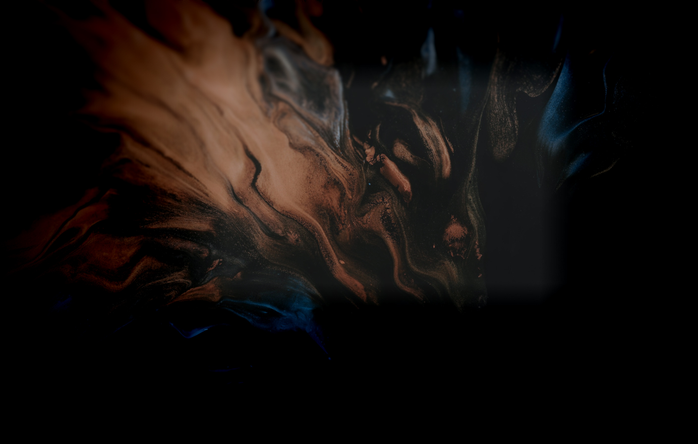
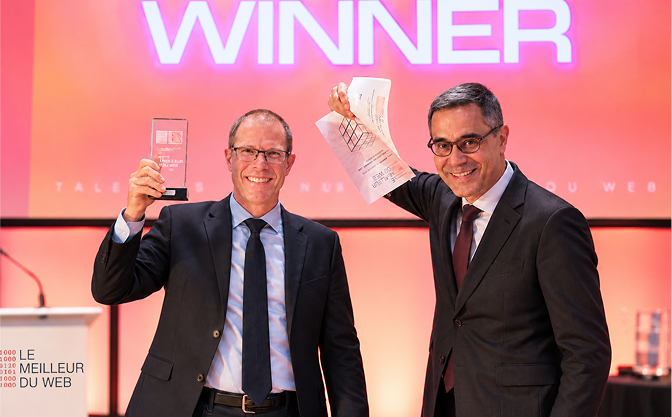
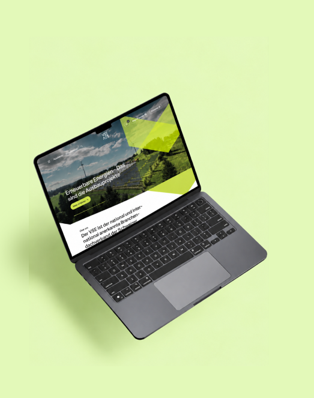
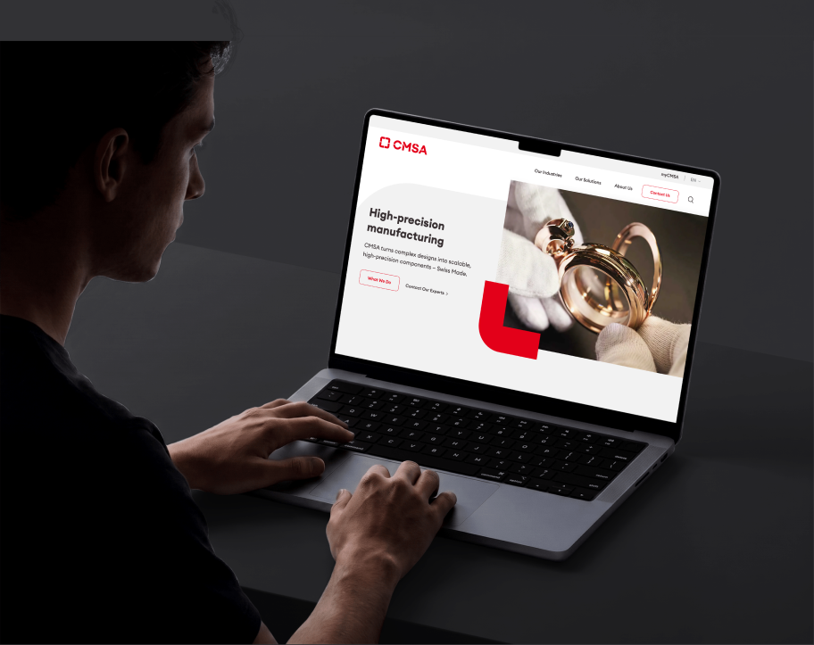
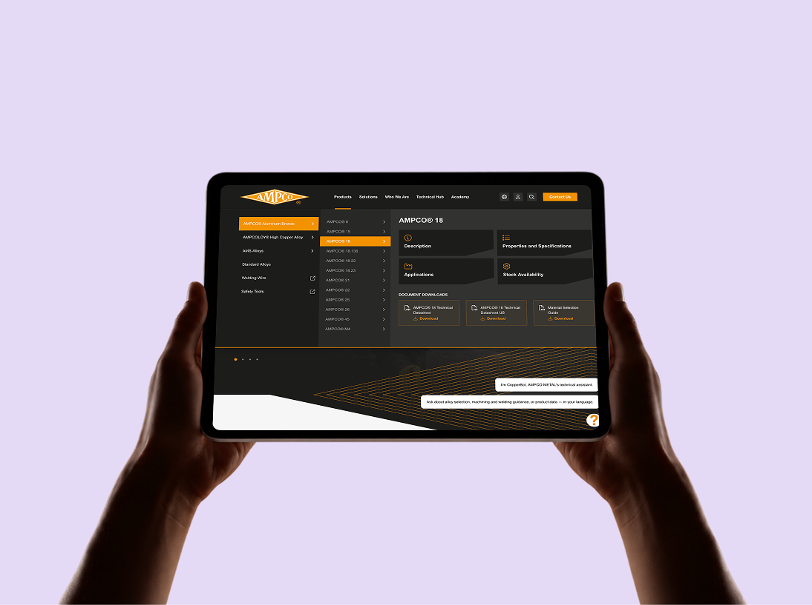
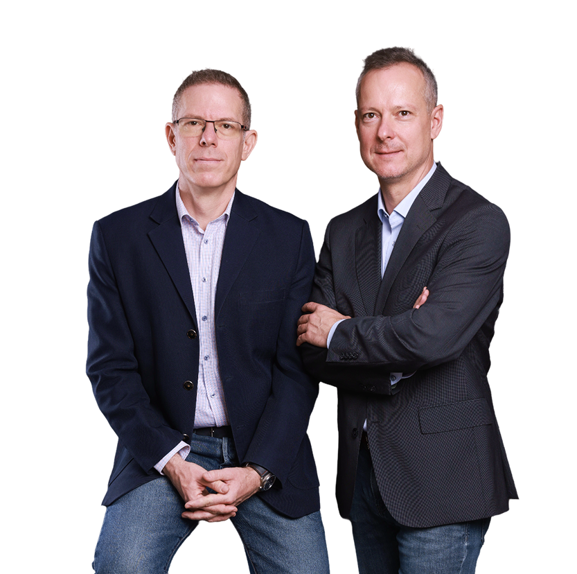

Web design & development agency in Geneva & Zürich
Enterprise-grade websites built to perform and scale.
Short-term trends pass, but solid technical foundations remain. As an independent, family-led studio, we craft high-speed, secure websites with personal care, transparent collaboration, and senior engineering in every build.
Services
Tailored digital platforms built on robust architecture and modern tech.
Drupal Development
Custom Development
12
Years delivering digital projects
across Switzerland
200
Projects
completed successfully
15
15 national and international awards
3
Locations
Geneva, Zürich, Budapest
- Le Meilleur du WebInnovation
- Le Meilleur du WebTechnology
- Le Meilleur du WebTechnology
- Le Meilleur du WebBest App
- Le Meilleur du WebTechnology
- Le Meilleur du WebMobile
- Le Meilleur du WebMobile
- Le Meilleur du WebMobile
- Le Meilleur du WebMobile
- Best of Swiss AppInnovation
- Best of Swiss AppTechnology
- Best of Swiss AppTechnology
- Best of Swiss AppBest App
- Best of Swiss AppTechnology
- Best of Swiss AppExtended Reality
- Best of Swiss AppMobile
- Best of Swiss AppAR/VR
- Best of Swiss AppMobile
Awards
Celebrating achievements that motivate and uplift.
Awards
Celebrating achievements that motivate and uplift.
Le Meilleur du Web
Winner, 2021
+ 14 nominations at the largest Swiss awards, such as Best of Swiss App, Best of Swiss Web, Apple Developer

References
Building digital products that drive growth

VSE Strom
B2BSleek and user-friendly website redesign tailored for a Swiss industry leader

CMSA
B2BMerged brands into one site, enhancing user experience with multilingual support

AMPCO
B2BRevamping website for enhanced user experience
VSE Strom
B2BSleek and user-friendly website redesign tailored for a Swiss industry leader
CMSA
B2BMerged brands into one site, enhancing user experience with multilingual support
AMPCO
B2BRevamping website for enhanced user experience
How we work
Designed for clarity. Built for action.
At Swiss Tomato, we create high-performing websites. Our UI/UX designers and developers craft user-friendly products tailored to your audience.
What we deliver:
- Local Expertise: Swiss account managers in Geneva and Zurich with a design hub in Budapest.
- Built for Conversion: Optimized landing pages and user journeys to convert visitors.
- SEO-Ready: Fully optimized architecture for online visibility.
Core Services:
- Web Design & UI/UX: Custom site design, web app interfaces, and e-commerce platforms.
- CMS & Framework Development: Expert WordPress and Drupal setups, alongside custom builds using PHP, Laravel, JavaScript, Vue.js, React, and Node.js.
- Optimization & Operations: SEO, ongoing technical support, and reliable hosting.
How we deliver
Responsive Collaboration
You work directly with a dedicated Swiss project manager backed by senior developers. No communication black holes.
Predictable Timelines
We set clear milestones and ensure a transparent workflow, eliminating surprises on launch day.
Proactive Technical Guidance
We don’t just follow orders; we enhance your strategy with cleaner code, improved UX, and scalable tech.
Responsive Collaboration
You work directly with a dedicated Swiss project manager backed by senior developers. No communication black holes.
Predictable Timelines
We set clear milestones and ensure a transparent workflow, eliminating surprises on launch day.
We worked with Swiss Tomato on our corporate website, unifying sites and presenting activities clearly. They structured the site for better navigation, resulting in a modern, scalable website that supports our goals.
We worked with Swiss Tomato on our corporate website, unifying sites and presenting activities clearly. They structured the site for better navigation, resulting in a modern, scalable website that supports our goals.
We worked with Swiss Tomato on our corporate website, unifying sites and presenting activities clearly. They structured the site for better navigation, resulting in a modern, scalable website that supports our goals.
We worked with Swiss Tomato on our corporate website, unifying sites and presenting activities clearly. They structured the site for better navigation, resulting in a modern, scalable website that supports our goals.
We worked with Swiss Tomato on our corporate website, unifying sites and presenting activities clearly. They structured the site for better navigation, resulting in a modern, scalable website that supports our goals.

Norbert RacskoCo-founderHead of Client Relations
Daniel RacskoCo-founderHead of Operations
Who we are
Built by two brothers, backed by enterprise expertise.
We combine boutique personal care with enterprise-grade technical execution to give your business a measurable edge.
Why us
Boutique Agility
Direct access to key decision-makers and quick turnarounds without bureaucratic delays.
Robust Architecture
Future-proof technology built on strict security, speed, and clean code standards.
Personal Accountability
As a family agency, we build reliable long-term digital infrastructure.
True Collaboration
We don’t just execute specs blindly; we proactively refine your digital product to maximize ROI.